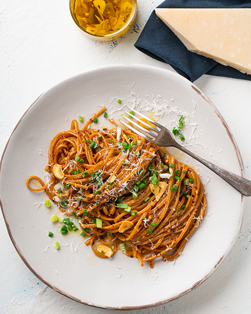

Spicy Garlic Butter Linguini

Description:
You know me and fusion pasta - it's an absolute passion of mine! This winning dish is so
simple and incredibly delicious, too, making maximum use from minimal ingredients. It's
also ideal as a meat-free meal.
Ingredients:
- 200g (7 oz) linguine or spaghetti
- 75g unsalted butter
- 4 garlic cloves, finely chopped
- 1 tsp chili flakes
- 2 1/2 tbsp soy sauce
- 2 1/2 tbsp oyster sauce
- 3 tbsp finely grated parmesan cheese, plus extra to serve
- 2 tbsp finely sliced spring onions (scallions)
Steps:
- To make the garlic oil, place the oil and the garlic in a small saucepan over
medium heat. Once the garlic is sizzling, cook for 2-3 minutes or until the
garlic is just starting to turn golden at the edges. Transfer to a heat-proof
owl and set aside for later (the garlic will continue cooking and turn evenly
golden in the bowl).
-
Heat a large pot of salted water over high heat. When boiling rapidly, add the
pasta and cook until al dente.
-
While the pasta is cooking, add the butter, garlic and chilli flakes into a large
frying pan over medium-high heat. Cook stirring until the butter is just
melted (you want the garlic to soften but not color), then add the soy
sauce and oyster sauce. Simmer for a minute and then take off the heat
until the pasta is cooked.
-
When the pasta is al dente, reserve a cup of pasta cooking liquid in case you
need it later. Place the butter sauce back on the heat and add the pasta
straight into the pan. Cook, stirring, for 3-4 minutes or until the liquid has
been absorbed by the pasta and everything is looking super glossy and thick.
Toss through the parmesan cheese (add a little pasta cooking water here if
necessary). Divide among serving plates. Top with a drizzle of garlic oil and
some garlic chips. Sprinkle with spring onion and add extra cheese.